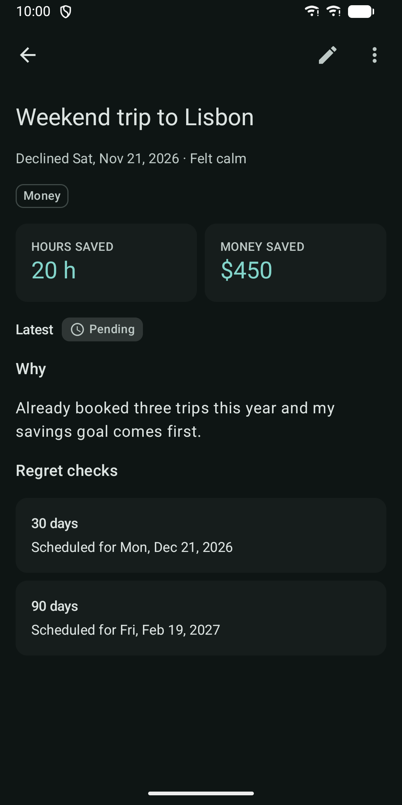

Anti-Bucket-Liste: Tagebuch
Notiere, wozu du Nein gesagt hast, und prüfe später, ob du froh darüber bist.





Über die App
Jedes „Nein“ schützt ein „Ja“. Die Anti-Bucket-Liste ist ein privates Tagebuch für deine bewussten Absagen: die Einladung, die du abgelehnt hast, das Upgrade, das du ausgelassen hast, das zusätzliche Projekt, das du nicht übernommen hast. Schreib auf, wozu du Nein gesagt hast und warum, und schau später nach, ob du immer noch froh darüber bist. IN SEKUNDEN NOTIERT - Wozu du Nein gesagt hast und warum, in deinen eigenen Worten - Gründe als Tags: Zeit, Geld, Energie, Werte und Grenzen, dazu eigene Tags - Wie sich das Neinsagen angefühlt hat, auf einer Skala von erleichtert bis unwohl - Das Datum deiner Entscheidung - Optional gesparte Geld- und Zeitbeträge CHECK-INS „NOCH FROH DARÜBER?“ Nach 30 und 90 Tagen fragt dich eine Erinnerung, wie du heute dazu stehst: immer noch froh, unsicher oder bereut. Auf Wunsch mit kurzer Notiz. Mit der Zeit siehst du, welche Art von Nein dir guttut. Sind Benachrichtigungen aus, erscheinen fällige Check-ins auch oben in deinem Tagebuch. DEIN TAGEBUCH - Durchsuche Titel und Gründe, die du geschrieben hast - Filtere nach Tag - Filtere nach Check-in-Ergebnis: offen, fällig, froh, unsicher oder bereut - Öffne jeden Eintrag und sieh den vollständigen Grund und den Verlauf der Check-ins STATISTIK - Anzahl der Neins, gesparte Euro und gesparte Stunden - Neins pro Tag - Deine Check-in-Ergebnisse als froh, unsicher und bereut HOMESCREEN-WIDGET Sieh die Neins dieses Monats und was du gespart hast, und lege mit einem Tipp einen neuen Eintrag an. SICHERN UND WIEDERHERSTELLEN Speichere dein Tagebuch als JSON-Datei an einem Ort deiner Wahl und stelle es später wieder her. Die Datei ist nicht verschlüsselt, und die App warnt dich vor jeder Sicherung. PRIVAT VON GRUND AUF - Kein Konto und keine Anmeldung - Keine Analyse und keine Werbung - Die App hat keine Internetberechtigung. Dein Tagebuch bleibt auf deinem Telefon. - Von der Android-Cloud-Sicherung und der Geräteübertragung ausgeschlossen PRO-FUNKTIONEN Alles oben Beschriebene funktioniert ohne Kauf und ohne Begrenzung. Pro ist ein optionaler Einmalkauf über Google Play, kein Abo. Pro bringt: - App-Sperre mit Fingerabdruck, Gesicht oder Geräte-PIN. Sie blendet auch die Widget-Zahlen und den Text der Benachrichtigungen aus. - Erweiterte Statistik: Neins pro Monat der letzten 12 Monate, Reuerate pro Tag sowie gesparte Beträge und Stunden pro Tag - CSV-Export für Tabellenkalkulationen Für Menschen, die an Grenzen, Minimalismus oder besseren Entscheidungen arbeiten, und für alle, die festhalten möchten, dass ein Nein die richtige Entscheidung war. Funktioniert auf Smartphones und Tablets, im hellen und dunklen Modus und mit Unterstützung für Screenreader.